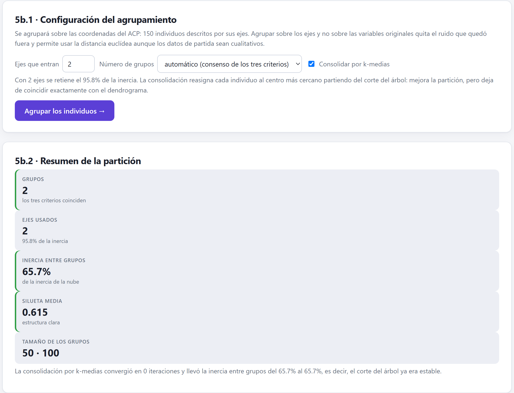
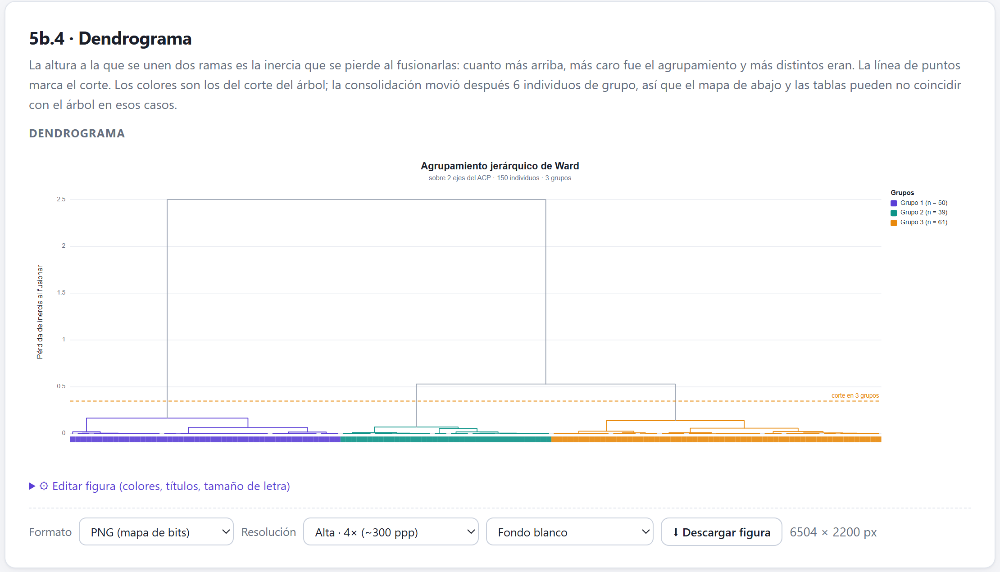
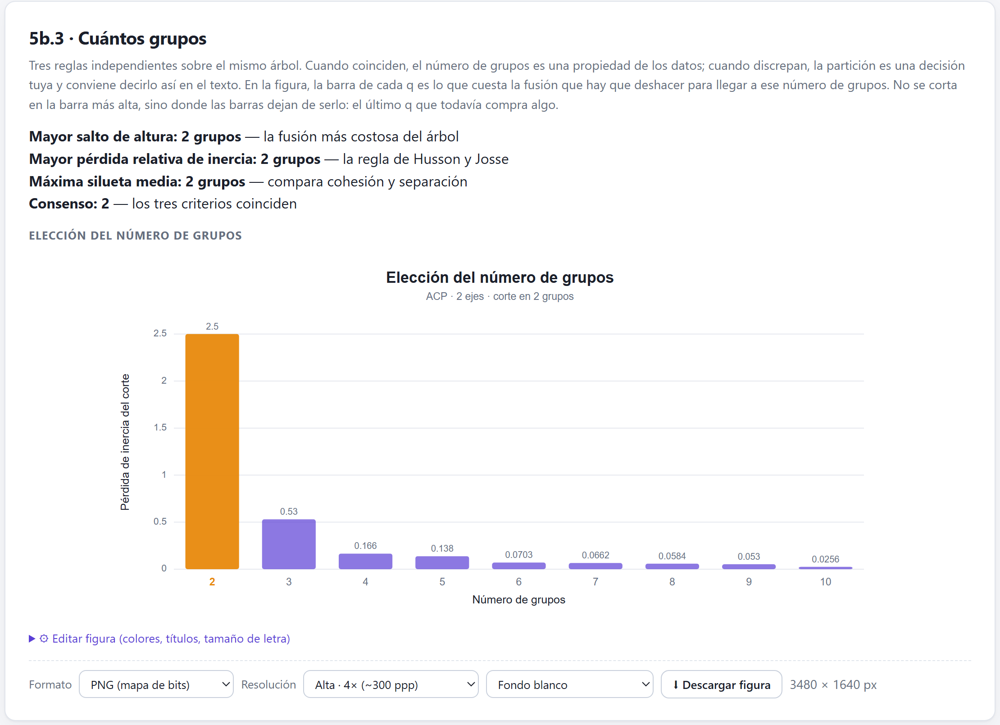
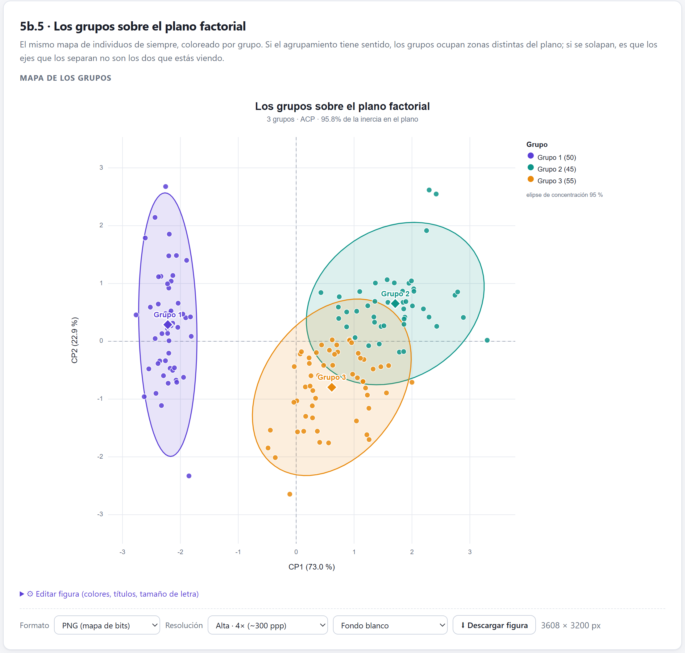
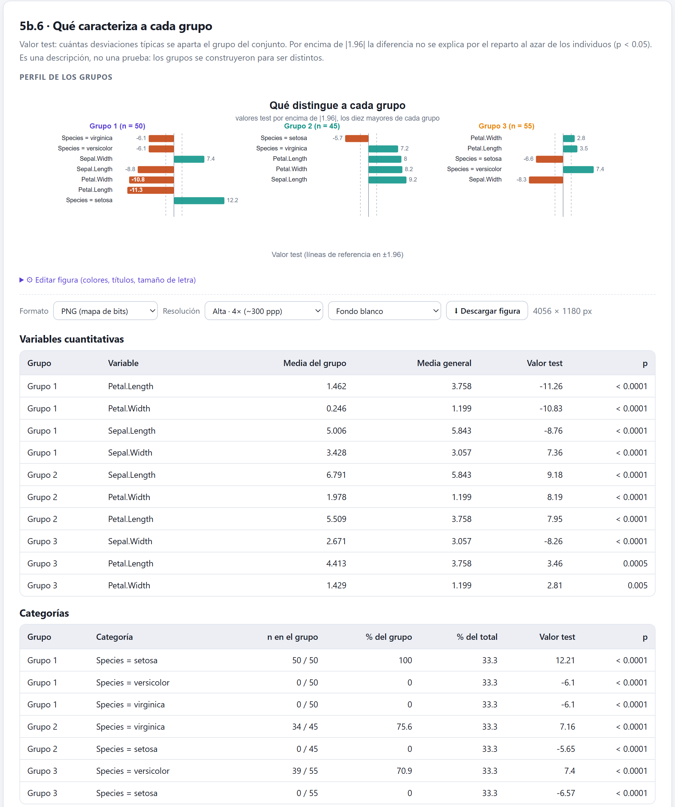
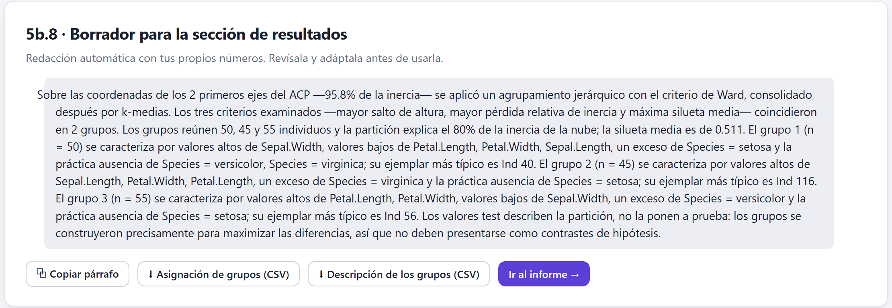
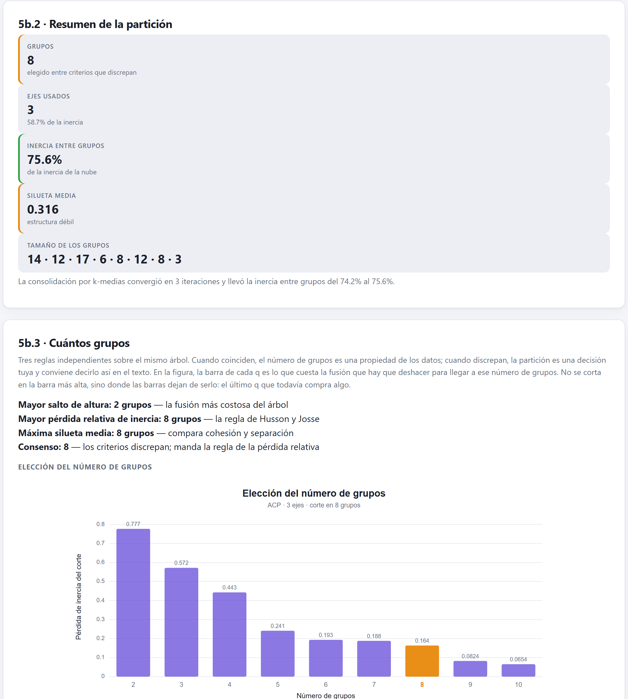

El paso opcional que convierte la nube de individuos en unos pocos grupos con nombre: agrupamiento jerárquico de Ward sobre los ejes, tres reglas para decidir cuántos grupos, consolidación por k-medias y la descripción de cada grupo. Funciona con los cinco métodos. Termina con lo que un agrupamiento no puede demostrar.
El análisis factorial ordena a los individuos en un espacio continuo. Agruparlos es otra operación, y es opcional: responde a la pregunta «¿qué tipos de individuos hay?», no a «¿qué dimensiones los ordenan?».
El HCPC —hierarchical clustering on principal components, de Husson, Josse y Pagès— agrupa sobre las coordenadas factoriales, no sobre la tabla original. Tiene dos ventajas:
El bloque aparece en la barra como 5b · Agrupamiento y se activa al generar los mapas del Bloque 4, junto con el Bloque 5. Tiene una tarjeta de teoría con seis temas y la tarjeta 5b.1 · Configuración del agrupamiento. Al pulsar Agrupar los individuos → aparecen siete tarjetas de resultados y se activa el Bloque 6.
La tarjeta de configuración se llena al abrir el bloque con el botón Agrupar los individuos (HCPC) →, que está al final del Bloque 5, tanto en el ACP como en los demás métodos. En la versión 1.1, si llegas con el botón 5b de la barra de pasos, la tarjeta queda vacía y pulsar Agrupar los individuos → da un error. Pulsa Interpretar componentes → en el Bloque 5 y usa ese botón.

1 2 3 4 5 6 7| Opción | Valores | Consejo |
|---|---|---|
| Ejes que entran | De 1 al número de ejes del método. Por defecto, los retenidos en el Bloque 2 (al menos 2 y como mucho 5). Debajo se lee cuánta inercia suman. | Usa los retenidos: pocos ejes fabrican grupos limpios que no están en los datos; muchos devuelven el ruido. |
| Número de grupos | automático (consenso de los tres criterios) o un número de 2 a 10. | Empieza en automático y cambia solo con una razón de tu disciplina (sección 8.3). |
| Consolidar por k-medias | Casilla, marcada. | Déjala marcada; desmárcala si necesitas que la partición coincida exactamente con el árbol. |
| Indicador | Qué dice | Color |
|---|---|---|
| Grupos | El número de grupos y si los tres criterios coinciden. | verde si coinciden · ámbar |
| Ejes usados | Cuántos y cuánta inercia suman. | — |
| Inercia entre grupos | La proporción de la inercia de la nube que explica la partición. | verde ≥ 50 % · ámbar |
| Silueta media | Cohesión frente a separación (sección 8.3). | verde ≥ 0.50 «estructura clara» · ámbar ≥ 0.25 «débil» · rojo «sin estructura apreciable» |
| Tamaño de los grupos | Individuos de cada grupo. | — |
En la versión 1.1 los indicadores de esta tarjeta se apilan en una columna en vez de formar una fila, como en el Bloque 2 con métodos distintos del ACP.
| Método | Individuos | Con qué se describen los grupos |
|---|---|---|
| ACP | Las puntuaciones sin rotar de las observaciones. Una rotación ortogonal no cambiaría las distancias; con una oblicua se agrupa igualmente la solución sin rotar. | Variables activas en sus unidades originales, cuantitativas suplementarias y cualitativas. |
| AC | Las filas de la tabla de contingencia, con su masa. | El perfil de cada fila: su reparto porcentual entre las columnas. |
| ACM, AFDM, AFM | Los individuos, sin las filas descartadas por vacíos. | Cuantitativas y cualitativas de los datos, activas y suplementarias. |
El árbol se construye de abajo arriba: cada individuo empieza siendo un grupo y, en cada paso, se unen los dos grupos cuya fusión menos inercia intragrupo añade.
g son los centros y w las masas de los grupos. Δ es la altura a la que aparece la fusión en el dendrograma: una rama alta significa que unir esos dos grupos costó caro, es decir, que eran distintos. Ward es el criterio natural aquí porque, como el análisis factorial, reparte la inercia total en una parte entre grupos y otra dentro de ellos.

| Control | Qué hace |
|---|---|
| Orientación | Hojas abajo u hojas a la izquierda. |
| Colorear las ramas por grupo · Color del tronco | Las ramas de cada grupo en su color; lo que está por encima del corte, en gris. |
| Línea de corte · Franja de grupos | La altura del corte y una banda de color bajo las hojas. |
| Escala en raíz cuadrada | Comprime las fusiones altas para ver mejor las bajas. |
| Etiquetas de las hojas · Máximo de hojas etiquetadas | Nombres de los individuos (80 como máximo por defecto; con más se ocultan). |
| Largo · Alto de las alturas | El tamaño del dibujo en píxeles. |
Igual que con el número de componentes, no hay una respuesta única. La tarjeta 5b.3 · Cuántos grupos calcula tres reglas sobre el mismo árbol, entre 2 y 10 grupos, y muestra si coinciden.
| Regla | Qué busca | Carácter |
|---|---|---|
| Mayor salto de altura | El número de grupos cuya fusión siguiente sería la más costosa en términos absolutos. | Suele elegir pocos grupos: la primera gran división. |
| Mayor pérdida relativa de inercia | El mismo salto, dividido entre la altura anterior. | La regla de Husson y Josse; decide cuando las tres discrepan. |
| Máxima silueta media | El número con la mejor silueta: para cada individuo, (b − a) / máx(a, b), con a su distancia media a los de su grupo y b la distancia media al grupo vecino más próximo. | Premia grupos compactos y separados. |
El consenso es el número que proponen más reglas; si las tres discrepan, manda la pérdida relativa. Con automático, ese es el número de grupos.

| Si… | entonces |
|---|---|
| Las tres reglas coinciden y la silueta es ≥ 0.50 | Ese número es una propiedad de los datos: repórtalo así. |
| Discrepan, pero una opción tiene sentido en tu disciplina | Elígela en Número de grupos y di que fue una decisión, con los números de cada regla. |
| La silueta de la mejor opción es < 0.25 | No hay grupos que reportar: la nube es continua. |
| El salto elige 2 y las otras reglas un número alto con silueta baja | Desconfía del número alto: suele ser la nube continua cortada en rebanadas (caso 3 de la sección 8.6). |
No se corta en la barra más alta de la figura, sino donde las barras dejan de ser altas: el último número que todavía «compra» inercia.
Una fusión del árbol, una vez hecha, no se deshace: un individuo que quedó del lado equivocado en un paso temprano se queda ahí. La consolidación parte de los centros del corte, reasigna cada individuo al centro más cercano y repite, hasta 30 veces, hasta que nadie se mueve. Nunca empeora la inercia intragrupo.
El texto bajo los indicadores dice cuántas iteraciones hizo y cómo cambió la inercia entre grupos. Si no hubo cambio, añade «el corte del árbol ya era estable».
El dendrograma se colorea siempre con el corte del árbol; el mapa, las tablas y las descargas usan la partición consolidada. Si la consolidación movió individuos, la tarjeta 5b.4 dice cuántos. Con iris y tres grupos movió 6: el árbol tiene grupos de 50, 39 y 61 individuos, y la partición final de 50, 45 y 55. Si necesitas que coincidan, desmarca la consolidación.

La tarjeta 5b.6 · Qué caracteriza a cada grupo describe cada grupo por lo que lo aparta del conjunto, con valores test: cuántas desviaciones típicas se aleja el grupo de la media general, bajo el modelo de que sus individuos se hubieran sacado al azar y sin reemplazo del total.

| Tabla | Columnas | Lectura |
|---|---|---|
| Variables cuantitativas | Grupo, variable, media del grupo, media general, valor test y p. Las suplementarias llevan *. | Valor test positivo: el grupo está por encima de la media. |
| Categorías | Grupo, categoría, n en el grupo / tamaño del grupo, % del grupo, % del total, valor test y p. | Positivo: la categoría está sobrerrepresentada; negativo: casi ausente. |
| Posición de cada grupo en los ejes | n y la media de cada eje usado. Siempre completa. | Dónde está el centro del grupo en cada dimensión. |
Con el AC, la primera tabla se llama Perfil de fila por grupo y compara el porcentaje de cada columna en el grupo con el general. Como las filas tienen masas muy distintas, ese valor test se lee como orden de importancia, no como probabilidad.
La tarjeta 5b.7 · Individuos que representan a cada grupo da, por grupo, los cinco paragones —los más cercanos a su centro: los ejemplares típicos— y los cinco específicos —los más alejados de los demás centros: los que no se confunden con ningún otro grupo—, con su distancia. Los paragones sirven para explicar qué es un grupo; los específicos, para elegir casos para un estudio de seguimiento.

Si eliges un número de grupos distinto del consenso y las tres reglas coincidían, el borrador dice «coincidieron en 2 grupos» y a continuación describe 3. Corrige esa frase: «Las tres reglas indicaban 2 grupos; se retuvieron 3 porque…». El indicador Grupos tiene el mismo problema: sigue diciendo «los tres criterios coinciden». La lista de reglas de la tarjeta 5b.3 sí lo aclara: «elegiste 3».
| Botón | Contenido |
|---|---|
| ⬇ Asignación de grupos (CSV) | Individuo, grupo y sus coordenadas en los ejes usados. Sirve para llevar el grupo a otro análisis. |
| ⬇ Descripción de los grupos (CSV) | Todos los valores test —también los no significativos— de cuantitativas, categorías y ejes, con valor en el grupo, valor general y p. |
El botón Ir al informe → abre el Bloque 6, que incluye el agrupamiento si lo ejecutaste.
El algoritmo siempre devuelve grupos, también sobre datos sin estructura. Conviene tener escritas tres cautelas antes de mirar el resultado.

practica4_sin_estructura.csv, seis variables independientes con tres componentes. La app propone 8 grupos, de 3 a 17 individuos, que explican el 75.6 % de la inercia, en verde. Pero la silueta es 0.316, las reglas discrepan (2 y 8) y la figura baja de forma continua, sin un escalón claro después del primero.Tres agrupamientos con resultados muy distintos. Las cifras son las de la app; en todos se entró al bloque con el botón del Bloque 5.
iris.csv · ACP con dos componentes (95.8 %)Lectura. Los datos tienen dos tipos claros —setosa y el resto— y un tercero borroso. La partición en tres recupera las especies con errores en la frontera entre versicolor y virginica, justo donde el mapa las solapa. Reportar tres grupos es legítimo si se dice que fue una decisión, y que las reglas indicaban dos.
proyecto_integrador_agronomia.csv · ACP con cuatro componentes, rendimiento suplementarioLectura. Los grupos se describen bien porque las cuatro dimensiones son reales, pero la silueta dice que las parcelas forman un continuo en esas dimensiones y no tipos separados. Es un caso para reportar las dimensiones del capítulo 7 y, si acaso, los grupos como una forma cómoda de resumirlas, declarando la silueta.
practica4_sin_estructura.csv · ACP con tres componentes (58.7 %)Lectura. Es el control negativo: el capítulo 3 ya diagnosticó estos datos como sin estructura (KMO = 0.465), y aun así el algoritmo devuelve ocho grupos con un porcentaje de inercia que parece excelente. Nada aquí debe reportarse como tipología. Si tus datos se parecen a este caso, la respuesta honesta es que no hay grupos.
Con el análisis completo, el siguiente capítulo presenta el Bloque 6: el informe que reúne todas las decisiones, tablas y figuras.